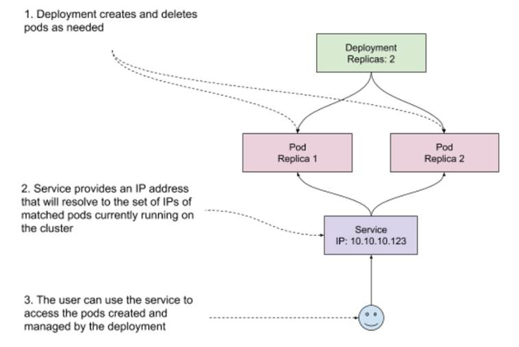
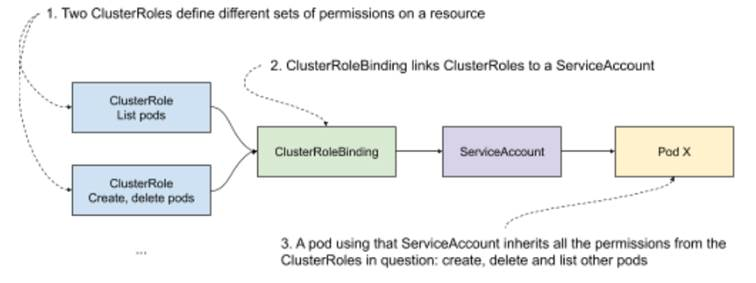
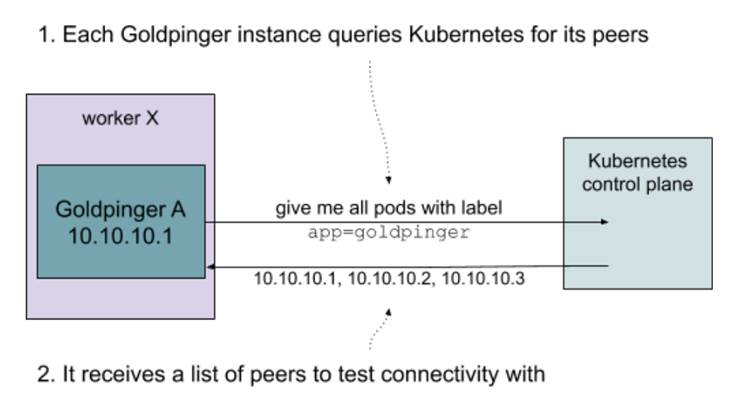
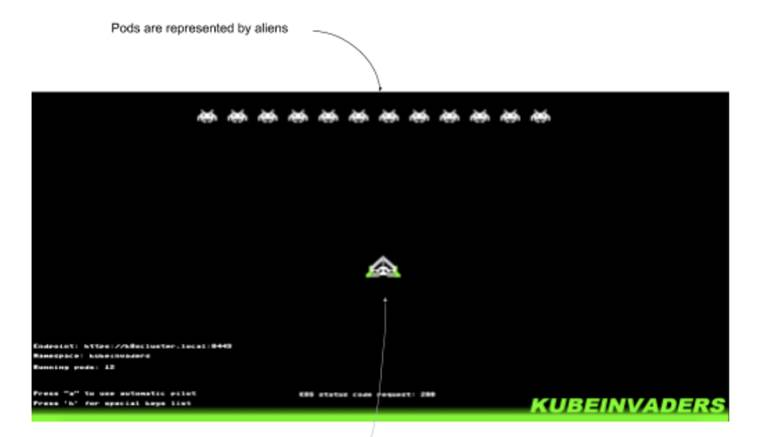
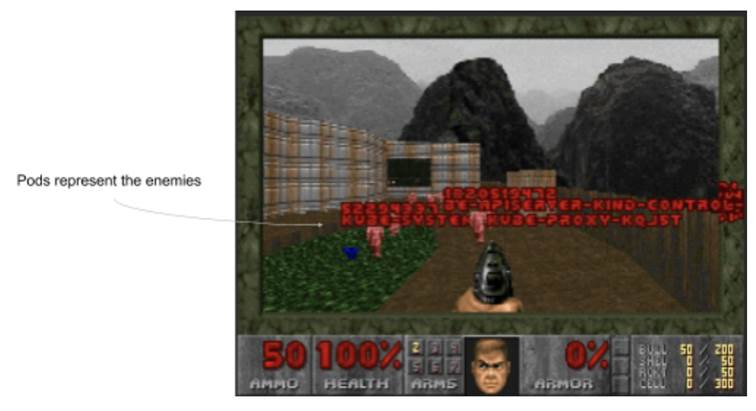

10.4 Testing out software running on Kubernetes
With a functional Kubernetes cluster at our disposal, we’re now ready to start working on the High Profile Project, aka ICANT. The pressure is on, we have a project to save!
As always, the first step is to build an understanding of how things work before we can reason about how they break. We’ll do that by kicking the tires and looking how ICANT is deployed and configured. Once we’re done with that, we’ll conduct two experiments and then finish this section by seeing how to make things easier for ourselves for the next time. Let’s start at the beginning - by running the actual project
10.4.1 Running the ICANT Project
As we discovered earlier when reading the documentation you inherited, the project didn’t get very far. They took an off-the-shelf component (Goldpinger), deployed it, and called it a day. All of which is bad news for the project, but good news to me; I have less explaining to do!
Goldpinger works by querying Kubernetes for all the instances of itself, and then periodically calling each of these instances and measuring the response time. It then uses that data to generate statistics (metrics) and plot a pretty connectivity graph. Each instance works in the same way - it periodically gets the address of its peers, and makes a request to each one of them. This is illustrated in figure 10.4. Goldpinger was invented to detect network slow-downs and problems, especially in larger clusters. It’s really simple and very effective.
Figure 10.4 Overview of how Goldpinger works

How do we go about running it? We’ll do it in two steps:
- Set up the right permissions, so that Goldpinger can query Kubernetes for its peer
- Deploy it on the cluster
We’re about to step into Kubernetes Wonderland, so let me introduce you to some Kubernetes lingo.
Kubernetes terminology
The documentation often mentions resources to mean the objects representing various abstractions that Kubernetes offers. For now, I’m going to introduce you to three basic building blocks used to describe software on Kubernetes:
- Pod. A pod is a collection of containers that are grouped together, run on the same host and share some system resources, for example an IP address. This is the unit of software that you can schedule on Kubernetes. You can schedule pods directly, but most of the time you will be using a higher level abstraction, such as a Deployment.
- Deployment. A deployment describes a blueprint for creating pods, along with extra metadata, like for example the number of replicas to run. Importantly, it also manages the lifecycle of pods that it creates. For example, if you modify a deployment to update a version of the image you want to run, the deployment can handle a rollout, deleting old pods and creating new ones one by one to avoid an outage. It also offers other things, like roll-back, if the roll out ever fails.
- Service. A service matches an arbitrary set of pods, and provides a single IP address that resolves to the matched pods. That IP is kept up to date with the changes made to the cluster. For example, if a pod goes down, it will be taken out of the pool.
You can see a visual representation of how these fit together in figure 10.5.
Figure 10.5 Pods, deployments and services example in Kubernetes

Another thing you need to know to understand how Goldpinger works is that to query Kubernetes, you need to have the right permissions.
NOTE POP QUIZ: WHAT’S A KUBERNETES DEPLOYMENT?
Pick one:
- A description of how to reach software running on your cluster
- A description of how to deploy some software on your cluster
- A description of how to build a container
See appendix B for answers.
Permissions
Kubernetes has an elegant way of managing permissions. First, it has a concept of a ClusterRole, that allows you to define a role and a corresponding set of permissions to execute verbs (create, get, delete, list, …) on various resources. Second, it has the concept of ServiceAccounts, which can be linked to any software running on Kubernetes, so that it inherits all the permissions that the ServiceAccount was granted. And finally, to make a link between a ServiceAccount and a ClusterRole, you can use a ClusterRoleBinding, which does exactly what it says on the tin.
If you’re new to it, this permissioning might sound a little bit abstract, so take a look at figure 10.6 for a graphical representation of how all of this comes together.
Figure 10.6 Kubernetes permissioning example

In our case, we want to allow Goldpinger pods to list its peers, so all we need is a single ClusterRole, and the corresponding ServiceAccount and ClusterRoleBinding. Later, we will use that ServiceAccount to permission the Goldpinger pods.
Creating the resources
Time for some code! In Kubernetes, we can describe all resources we want to create using a Yaml file (.yml; https://yaml.org/) that follows the specific format that Kubernetes accepts. See listing 10.1 to see how all of this permissioning translates into .yml. For each element we described, there is a Yaml object, specifying the corresponding type (kind) and the expected parameters. First, a ClusterRole called goldpinger-clusterrol that allows for listing pods (bold font). Then a ServiceAccount called goldpinger-serviceaccount (bold font). And finally, a ClusterRoleBinding, linking the ClusterRole to the ServiceAccount. If you’re new to Yaml, note that the --- separators allow for describing multiple resources in a single file.
Listing 10.1 goldpinger-rbac.yaml
---
apiVersion: rbac.authorization.k8s.io/v1
kind: ClusterRole #A
metadata:
name: goldpinger-clusterrole
rules:
- apiGroups:
- ""
resources:
- pods #B
verbs:
- list #C
---
apiVersion: v1
kind: ServiceAccount #D
metadata:
name: goldpinger-serviceaccount
namespace: default
---
apiVersion: rbac.authorization.k8s.io/v1beta1
kind: ClusterRoleBinding
metadata:
name: goldpinger-clusterrolebinding
roleRef:
apiGroup: rbac.authorization.k8s.io
kind: ClusterRole
name: goldpinger-clusterrole #E
subjects:
- kind: ServiceAccount
name: goldpinger-serviceaccount #F
namespace: default
#A we start with a cluster role
#B the cluster role gets permissions for resource of type pod
#C the cluster role gets permissions to list the resource of type pod
#D we create a service account to use later
#E we create a cluster role binding, that binds the cluster role...
#F … to the service account
This takes care of the permissionsing part. Let’s now go ahead and see what deploying the actual Goldpinger looks like.
Goldpinger .yml files
To make sense of deploying Goldpinger, I need to explain one more detail that I skipped over so far: matching and labels.
Kubernetes makes extensive use of labels, which are simple key-value pairs of type string. Every resource can have arbitrary metadata attached to it, including labels. They are used by Kubernetes to match sets of resources, and are fairly flexible and easy to use.
For example, let’s say that you have two pods, with the following labels:
- Pod A, with labels
app=goldpingerandstage=dev - Pod B, with labels
app=goldpingerandstage=prod
If you match (select) all pods with label app=goldpinger, you will get both pods. But if you match with label stage=dev, you will only get pod A. You can also query by multiple labels, and in that case Kubernetes will return pods matching all requested labels (a logical AND).
Labels are useful for manually grouping resources, but they’re also leveraged by Kubernetes, for example to implement deployments. When you create a deployment, you need to specify the selector (a set of labels to match), and that selector needs to match the pods created by the deployment. The connection between the deployment and the pods it manages relies on labels.
Label-matching is also the same mechanism that Goldpinger leverages to query for its peers: it just asks Kubernetes for all pods with a specific label (by default app=goldpinger). Figure 10.7 shows that graphically.
Figure 10.7 Kubernetes permissioning example

Putting this all together, we can finally write a .yml file with two resource descriptors: a deployment and a matching service.
Inside the deployment, we need to specify the following:
- The number of replicas (we’ll go with three for demonstration purposes)
- The selector (again the default app=goldpinger),
- The actual template of pods to create
In the pod template, we will specify the container image to run, some environment values required for Goldpinger to work and ports to expose so that other instances can reach it. The important bit is that we need to specify some arbitrary port that matches the PORT environment variable (this is what Goldpinger uses to know what port to listen on). We’ll go with 8080. Finally, we also specify the service account we created earlier on, to permission the Goldpinger pods to query Kubernetes for their peers.
Inside the service, we once again use the same selector (app=goldpinger), so that the service matches the pods created by the deployment, and the same port 8080 that we specified on the deployment.
NOTE DEPLOYMENTS AND DAEMONSETS
In a typical installation, we would like to have one Goldpinger pod per node (physical machine, VM) in your cluster. That can be easily achieved by using a DaemonSet (it works a lot like a deployment, but instead of specifying the number of replicas, it just assumes one replica per node - learn more at https://kubernetes.io/docs/concepts/workloads/controllers/daemonset/). In our example setup we will use a Deployment instead, because with only one node, we would only have a single pod of Goldpinger, which defeats the purpose of this demonstration.
Listing 10.2 contains the .yml file we can use to create the deployment and the service. Take a look.
Listing 10.2 goldpinger.yml .
---
apiVersion: apps/v1
kind: Deployment
metadata:
name: goldpinger
namespace: default
labels:
app: goldpinger
spec:
replicas: 3 #A
selector: #B
matchLabels:
app: goldpinger
template:
metadata: #C
labels:
app: goldpinger
spec:
serviceAccount: "goldpinger-serviceaccount"
containers:
- name: goldpinger
image: "docker.io/bloomberg/goldpinger:v3.0.0"
env:
- name: REFRESH_INTERVAL
value: "2"
- name: HOST
value: "0.0.0.0"
- name: PORT
value: "8080" #D
# injecting real pod IP will make things easier to understand
- name: POD_IP
valueFrom:
fieldRef:
fieldPath: status.podIP
ports:
- containerPort: 8080 #E
name: http
---
apiVersion: v1
kind: Service
metadata:
name: goldpinger
namespace: default
labels:
app: goldpinger
spec:
type: LoadBalancer
ports:
- port: 8080 #F
name: http
selector:
app: goldpinger #G
#A the deployment will create three replicas of the pods (three pods)
#B the deployment is configured to match pods with label app=goldpinger
#C the pods template actually gets the label app=goldpinger
#D we configure the Goldpinger pods to run on port 8080
#E we expose the port 8080 on the pod, so that it’s reachable
#F in the service, we target port 8080 that we made available on the pods
#G the service will target pods based on the label app=goldpinger
With that, we’re now ready to actually start it! If you’re following along, you can find the source code for both of these files (goldpinger-rbac.yml and goldpinger.yml) at https://github.com/seeker89/chaos-engineering-book/tree/master/examples/kubernetes. Let’s make sure that both files are in the same folder, and let’s go ahead and run them.
Deploying Goldpinger
Start by creating the permissioning resources (the goldpinger-rbac.yml file), by running the following command:
kubectl apply -f goldpinger-rbac.yml
You will see Kubernetes confirming the three resources were created successfully, with the following output:
clusterrole.rbac.authorization.k8s.io/goldpinger-clusterrole created
serviceaccount/goldpinger-serviceaccount created
clusterrolebinding.rbac.authorization.k8s.io/goldpinger-clusterrolebinding created
Then, create the actual deployment and a service by running the following command:
kubectl apply -f goldpinger.yml
Just like before, you will see the confirmation that the resources were created:
deployment.apps/goldpinger created
service/goldpinger created
Once that’s done, let’s confirm that pods are running as expected. To do that, list the pods by running the following command:
kubectl get pods
You should see an output similar to the following, with three pods in status Running (bold font). If they’re not, you might need to give it a few seconds to start:
NAME READY STATUS RESTARTS AGE
goldpinger-c86c78448-5kwpp 1/1 Running 0 1m4s
goldpinger-c86c78448-gtbvv 1/1 Running 0 1m4s
goldpinger-c86c78448-vcwx2 1/1 Running 0 1m4s
The pods are running, meaning that the deployment did its job. Goldpinger crashes if it can’t list its peers, which means that the permissioning we set up also works as expected. The last thing to check, is that the service was configured correctly. You can do that by running the following command, specifying the name of the service we created (“goldpinger”):
kubectl describe svc goldpinger
You will see the details of the service, just like in the following output (abbreviated). Note the Endpoints field, specifying three IP addresses, for the three pods that it’s configured to match.
Name: goldpinger
Namespace: default
Labels: app=goldpinger
(...)
Endpoints: 172.17.0.3:8080,172.17.0.4:8080,172.17.0.5:8080
(...)
If you want to be 100% sure that the IPs are correct, you can compare them to the IPs of Goldpinger pods. You can display them easily, by appending -o wide (for wide output) to the kubectl get pods command. Try it by running the following:
kubectl get pods -o wide
You will see the same list as before, but this time with extra details, including the IP (bold font). They should correspond to the list specified in the service. If they weren’t, it would point to misconfigured labels. Note, that depending on your internet connection speed and your setup, it might take a little bit of time to start. If you see pods in pending state, give it an extra minute:
NAME READY STATUS RESTARTS AGE IP NODE NOMINATED NODE READINESS GATES
goldpinger-c86c78448-5kwpp 1/1 Running 0 15m 172.17.0.4 minikube <none> <none>
goldpinger-c86c78448-gtbvv 1/1 Running 0 15m 172.17.0.3 minikube <none> <none>
goldpinger-c86c78448-vcwx2 1/1 Running 0 15m 172.17.0.5 minikube <none> <none>
Everything's up and running, so let’s access Goldpinger to see what it’s really doing. To do that, we’ll need to access the service we created.
NOTE ACCESSING THE SOFTWARE RUNNING ON KUBERNETES FROM OUTSIDE THE CLUSTER
Kubernetes does a great job standardizing the way people run their software. Unfortunately, not everything is easily standardized. Although every Kubernetes cluster supports services, the way you access the cluster and therefore its services depends on the way the cluster was set up. In this chapter, we will stick to Minikube, because it’s simple and easily accessible to anyone. If you’re running your own Kubernetes cluster, or use a managed solution from one of the cloud providers, accessing software running on the cluster might involve some extra setup (for example setting up an Ingress https://kubernetes.io/docs/concepts/services-networking/ingress/). Refer to the relevant documentation.
On Minikube, we can leverage the command minikube service, which will figure out a way to access the service directly from your host machine and open the browser for you. To do that, run the following command:
minikube service goldpinger
You will see an output similar to the following, specifying the special URL that Minikube prepared for you (bold font). Your default browser will be launched to open that URL.
|-----------|------------|-------------|-----------------------------|
| NAMESPACE | NAME | TARGET PORT | URL |
|-----------|------------|-------------|-----------------------------|
| default | goldpinger | http/8080 | http://192.168.99.100:30426 |
|-----------|------------|-------------|-----------------------------|
🎉 Opening service default/goldpinger in default browser…
Inside the newly launched browser window, you will see the Goldpinger UI. It will look similar to what’s shown in figure 10.8. It’s a graph, on which every point represents an instance of Goldpinger, and every arrow represents the last connectivity check (an HTTP request) between the instances. You can click a node to select it and display extra information. It also provides other functionality like a heatmap, showing hotspots of any potential networking slowness; and metrics, providing statistics that can be used to generate alerts and pretty dashboards. Goldpinger is a really handy tool for detecting any network issues, downloaded more than a million times from Docker Hub!
Figure 10.8 Goldpinger UI in action

Feel free to take some time to play around, but otherwise we’re done setting it all up. We have a running application that we can interact with, all deployed with just two kubectl commands.
Unfortunately, on our little test cluster, all three instances are running on the same host, so we’re unlikely to see any network slowness, which is pretty boring. Fortunately, as chaos engineering practitioners, we’re well equipped to introduce failure and make things interesting again. Let’s start with the basics - an experiment to kill some pods.
10.4.2 Experiment 1: kill 50% of pods
Much like a villain from a comic book movie, we might be interested in seeing what happens when we kill 50% of Goldpinger pods. Why do that? It’s an inexpensive experiment that can answer a lot of questions about what happens when one of these instances goes down (simulating a machine going down). For example:
- Do the other instances detect that to begin with?
- If so, how long before they detect it?
- How does Goldpinger configuration affect all of that?
- If we had an alert set up, would it get triggered?
How should we go about implementing this? In the previous chapters, we’ve covered different ways this could be addressed. For example, you could log into the machine running the Goldpinger process you want to kill, and simply run a kill command, like we did before. Or, if your cluster uses Docker to run the containers (more on that soon), you could leverage the tools we’ve covered in chapter 5. The point is that all of the techniques you learned in the previous chapter still apply. That said, Kubernetes gives us other options, like directly deleting pods. It’s definitely the most convenient way of achieving that, so let’s go with that option.
There is another crucial detail to our experiment: Goldpinger works by periodically making HTTP requests to all of its peers. That period is controlled by the environment variable called REFRESH_PERIOD. In the goldpinger.yml file you deployed, that value was set to 2 seconds:
name: REFRESH_INTERVAL
value: "2"
That means that the maximum time it takes for an instance to notice another instance being down is 2 seconds. This is pretty aggressive and in a large cluster would result in a lot of traffic and CPU time spent on this, but I chose that value for our demonstration purposes. It will be handy to see the changes detected quickly. With that, we now have all the elements, so let’s turn this into a concrete plan of an experiment.
Experiment 1: plan
If we take the first question we mentioned (do other Goldpinger instances detect a peer down), we can design a simple experiment plan like so:
- Observability: use Goldpinger UI to see if there are any pods marked as inaccessible; use kubectl to see new pods come and go
- Steady state: all nodes healthy
- Hypothesis: if we delete one pod, we should see it in marked as failed in Goldpinger UI, and then be replaced by a new, healthy pod
- Run the experiment
That’s it! Let’s see how to implement it.
Experiment 1: implementation
To implement this experiment, the pod labels come in useful once again. All we need to do is leverage kubectl get pods to get all pods with label app=goldpinger, pick a random pod and kill it, using kubectl delete. To make things easy, we can also leverage kubectl’s -o name flag to only display the pod names, and use a combination of sort --random-sort and head -n1 to pick a random line of the output. Put all of this together, and you get a script like kube-thanos.sh from listing 10.3. Store it somewhere on your system (or clone it from the Github repo).
Listing 10.3 kube-thanos.sh
#!/bin/bash
kubectl get pods \ #A
-l app=goldpinger \ #B
-o name \ #C
| sort --random-sort \ #D
| head -n 1 \ #E
| xargs kubectl delete #F
#A use kubectl to list pods
#B only list pods with label app=goldpinger
#C only display the name as the output
#D sort in random order
#E pick the first one
#F delete the pod
Armed with that, we’re ready to rock. Let’s run the experiment.
Experiment 1: run!
Let’s start by double-checking the steady state. Your Goldpinger installation should still be running and you should have the UI open in a browser window. If it’s not, you can bring both back up by running the following commands:
kubectl apply -f goldpinger-rbac.yml
kubectl apply -f goldpinger.yml
minikube service goldpinger
To confirm all nodes are OK, simply refresh the graph by clicking the “reload” button, and verify that all three nodes are showing in green. So far so good.
To confirm that our script works, let’s also set up some observability for the pods being deleted and created. We can leverage the --watch flag of the kubectl get command to print the names of all pods coming and going to the console. You can do that by opening a new terminal window, and running the following command:
kubectl get pods --watch
You will see the familiar output, showing all the Goldpinger pods, but this time the command will stay active, blocking the terminal. You can use Ctrl-C to exit at any time, if needed.
NAME READY STATUS RESTARTS AGE
goldpinger-c86c78448-6rtw4 1/1 Running 0 20h
goldpinger-c86c78448-mj76q 1/1 Running 0 19h
goldpinger-c86c78448-xbj7s 1/1 Running 0 19h
Now, to the fun part! To conduct our experiment, we’ll open another terminal window for the kube-thanos.sh script, run it to kill a random pod, and then quickly go to the Goldpinger UI to observe what the Goldpinger pods saw. Bear in mind that in the local setup, the pods will recover very rapidly, so you might need to be quick to actually observe the pod becoming unavailable and then healing. In the meantime, the kubectl get pods --watch command will record the pod going down and a replacement coming up. Let’s do that!
Open a new terminal window and run the script to kill a random pod:
bash kube-thanos.sh
You will see an output showing the name of the pod being deleted, like in the following:
pod "goldpinger-c86c78448-shtdq" deleted
Go quickly to the Goldpinger UI and click refresh. You should see some failure, like in figure 10.9. Nodes that can’t be reached by at least one other node will be marked as unhealthy. I marked the unhealthy node in the figure. The live UI also uses a red color to differentiate them. You will also notice that there are four nodes showing up. This is because after the pod is deleted, Kubernetes tries to recoverge to the desired state (three replicas), so it creates a new pod to replace the one we deleted.
NOTE BE QUICK!
If you’re not seeing any errors, the pods probably recovered before you switched to the UI window, because your computer is quicker than mine when I was writing this and chose the parameters. If you re-run the command and refresh the UI more quickly, you should be able to see it.
Figure 10.9 Goldpinger UI showing an unavailable pod being replaced by a new one

Now, go back to the terminal window that is running kubectl get pods --watch. You will see an output similar to the following. Note the pod that we killed (-shtdq) going into Terminating state, and a new pod (-lwxrq) taking its place (both in bold font). You will also notice that the new pod goes through a lifecycle of Pending to ContainerCreating to Running, while the old one goes to Terminating.
NAME READY STATUS RESTARTS AGE
goldpinger-c86c78448-pfqmc 1/1 Running 0 47s
goldpinger-c86c78448-shtdq 1/1 Running 0 22s
goldpinger-c86c78448-xbj7s 1/1 Running 0 20h
goldpinger-c86c78448-shtdq 1/1 Terminating 0 38s
goldpinger-c86c78448-lwxrq 0/1 Pending 0 0s
goldpinger-c86c78448-lwxrq 0/1 Pending 0 0s
goldpinger-c86c78448-lwxrq 0/1 ContainerCreating 0 0s
goldpinger-c86c78448-shtdq 0/1 Terminating 0 39s
goldpinger-c86c78448-lwxrq 1/1 Running 0 2s
goldpinger-c86c78448-shtdq 0/1 Terminating 0 43s
goldpinger-c86c78448-shtdq 0/1 Terminating 0 43s
Finally, let’s check that everything recovered smoothly. To do that, go back to the browser window with Goldpinger UI, and refresh once more. You should now see the three new pods happily pinging each other, all in green. Which means that our hypothesis was correct, on both fronts.
Nice job. Another one bites the dust, another experiment under your belt. But before we move on, let’s just discuss a few points.
NOTE POP QUIZ: WHAT HAPPENS WHEN A POD DIES ON A KUBERNETES CLUSTER?
Pick one:
- Kubernetes detects it and send you an alert
- Kubernetes detects it, and will restart it as necessary to make sure the expected number of replicas are running
- Nothing
See appendix B for answers.
Experiment 1: discussion
For the sake of teaching, I took a few shortcuts here that I want to make you aware of. First, when accessing the pods through the UI, we’re using a service, which resolves to a pseudo-random instance of Goldpinger every time you make a new call. That means that it’s possible to get routed to the instance we just killed, and get an error in the UI. It also means that every time you refresh the view, you get the reality from a point of view of a different pod. For illustration purposes, that’s not a deal-breaker on a small test cluster but if you run a large cluster and want to make sure that a network partition doesn’t obscure your view, you will need to make sure you consult all available instances, or at least a reasonable subset. Goldpinger addresses that issue with metrics, and you can learn more about that at https://github.com/bloomberg/goldpinger#prometheus
Second, using a GUI-based tool this way is a little bit awkward. If you see what you expect, that’s great. But if you don’t, it doesn’t necessarily mean it didn’t happen, it might be that you simply missed it. Again, this can be alleviated by using the metrics, which I skipped here for the sake of simplicity.
Third, if you look closely at the failures that you see in the graph, you will see that the pods sometimes start receiving traffic before they are actually up. This is because, again for simplicity, I skipped the readiness probe that serves exactly that purpose. If set, a readiness probe prevents a pod from receiving any traffic until a certain condition is met (see the documentation at https://kubernetes.io/docs/tasks/configure-pod-container/configure-liveness-readiness-startup-probes/). For an example of how to use it, see the installation docs of Goldpinger (https://github.com/bloomberg/goldpinger#installation).
Finally, remember that depending on the refresh period you’re running Goldpinger with, the data you’re looking at is up to that many seconds stale, which means that for the pods we killed, we’ll keep seeing them for an extra number of seconds equal to the refresh period (2 seconds in our setup).
These are the caveats my lawyers advised me to clarify before this goes to print. In case that makes you think I’m not fun at parties, let me prove you wrong. Let’s play some Invaders, like it’s 1978.
10.4.3 Party trick: killing pods in style
If you really want to make a point that chaos engineering is fun, I’ve got two tools for you.
First, KubeInvaders (https://github.com/lucky-sideburn/KubeInvaders). It gamifies the process of killing pods by starting a clone of Space Invaders, where the aliens are pods in the specified namespace. You guessed it, the ones you shoot down are deleted in Kubernetes. Installation involves deploying it on a cluster, and then connecting a local client that actually displays the game content. See figure 10.10 to see what it looks like in action.
Figure 10.10 Kubeinvader screenshot from https://github.com/lucky-sideburn/KubeInvaders

The second one is for fans of the first-person shooter genre: Kube DOOM (https://github.com/storax/kubedoom). Similar to KubeInvaders, it represents pods as enemies, and kills in Kubernetes the ones that die in the game. Tip to justify using it: it’s often much quicker than copying and pasting a name of a pod, saving so much time (mandatory reference: https://xkcd.com/303/). See figure 10.11 for a screenshot.
Figure 10.11 Kube DOOM screenshot from https://github.com/storax/kubedoom

For Kube DOOM, the installation is pretty straightforward: you run a pod on the host, pass a kubectl configuration file to it, and then use a desktop sharing client to connect to the game. After a long day of debugging, it might be just what you need. I’ll just leave it there.
I’m sure that will help with your next house party. When you finish the game, let’s take a look at another experiment - some good old network slowness.
10.4.4 Experiment 2: network slowness
Slowness, my nemesis, we meet again. If you’re a software engineer, chances are you’re spending a lot of your time trying to outwit slowness. When things go wrong, actual failure is often easier to debug than situations when things mostly work. And slowness tends to fall into the latter category.
Slowness is such an important topic that we touch upon it in nearly every chapter of this book. We introduced some slowness using tc in chapter 4, and then again using Pumba in Docker in chapter 5. We use some in the context of JVM, application level ,and even browser in other chapters. Time to take a look at what’s different when running on Kubernetes.
It’s worth mentioning that everything we covered before still applies here. We could very well use tc or Pumba directly on one of the machines running the processes we’re interested in, and modify them to introduce the failure we care about. In fact, using kubectl cp and kubectl exec, we could upload and execute tc commands directly in a pod, without even worrying about accessing the host. Or we could even add a second container to the Goldpinger pod that would execute the necessary tc commands.
All of these options are viable, but share one downside: they modify the existing software that’s running on your cluster, and so by definition carry risks of messing things up. A convenient alternative is to add extra software, tweaked to implement the failure we care about, but otherwise identical to the original and introduce the extra software in a way that will integrate with the rest of the system. Kubernetes makes it really easy. Let me show you what I mean; let’s design an experiment around simulated network slowness.
Experiment 2: plan
Let’s say that we want to see what happens when one instance of Goldpinger is slow to respond to queries of its peers. After all, this is what this piece of software was designed to help with, so before we rely on it, we should test that it works as expected.
A convenient way of doing that is to deploy a copy of Goldpinger that we can modify to add a delay. Once again, we could do it with tc, but to show you some new tools, let’s use a standalone network proxy instead. That proxy will sit in front of that new Goldpinger instance, receive the calls from its peers, add the delay, and relay the calls to Goldpinger. Thanks to Kubernetes, setting it all up is pretty straightforward.
Let’s iron out some details. Goldpinger’s default timeout for all calls is 300ms, so let’s pick an arbitrary value of 250ms for our delay: enough to be clearly seen, but not enough to cause a timeout. And thanks to the built-in heatmap, we will be able to visually show the connections that take longer than others, so the observability aspect is taken care of. The plan of the experiment figuratively writes itself: